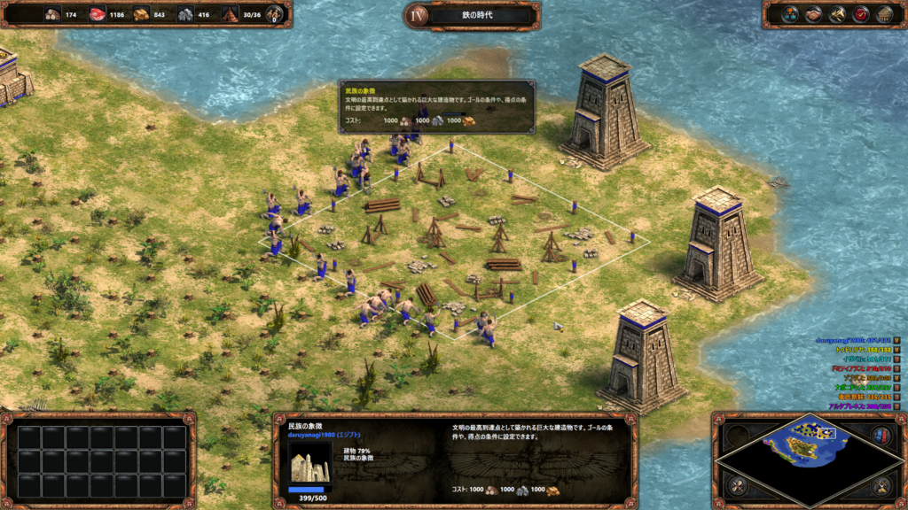
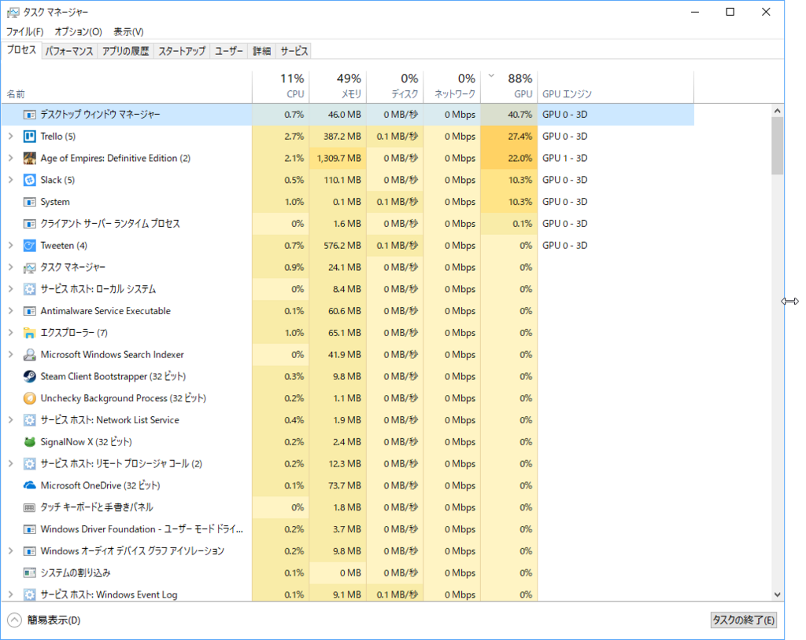

日記：雨が降って免許の更新にいけなかったのでずっと AoE で遊んでた
公開日：
金曜日はお休みにした。混雑が嫌いなので、平日の休みは免許更新のチャンス――だったのだけど、あいにくの風と雨で断念した。日曜日に行くか、日曜日に仕事を済ませて月曜日の午前中に行くか。まぁ、状況次第でいいかなって感じ。
それはそうと、最近は精神の消耗が激しい。ほんとは部屋の掃除でもすべきだけど、まったくやる気が起きないので、この日はずっとゴロゴロと本を読んだり、AbemaTV で将棋をみたり、Age of Empire: DE で遊んだりしていた。
Age of Empire は気晴らしのためにやるので、あまり攻略法の研究はしない。自己流で戦って、ダメならリセットって感じ。畑の枚数は町の中心をぐるっとめぐる8枚だけ、町の人の数はなんとなく4の倍数で、資源の回収スピードを見ながら調整する（殺されたら補充）。塔と船で防衛するのが好きで、隘路を見つけては密集させて、敵の大軍を阻止する。敵の町の中心に塔を建てると、町の人がわらわら集まってきて塔をつぶそうとする習性を生かして、おびき寄せて虐殺する――やってることは毎回同じで、割とルーチンワークだ。このルーチンワークをやるためにゲームを起動しているようなもんで、自分でもなんでゲームしているのかさっぱりわからない。
しかし、だ。こういうやり方では砂漠のマップと島のマップがクリアできない。どうにも木が足りなくなるのだ。一定時間たてば生えてくるといいのにな……。
おおもとの原因は、食糧（肉）生産を木（畑）に頼っていることにあるらしい。木に頼らずに食料を生産するには、
- ベリーを摘む：穀物倉（木）＋人（肉）
- 野獣を狩る：貯蔵庫（木）＋人（肉）
- 魚を捕る：港（木）＋漁船（木）
で代替する必要がある。穀物倉や貯蔵庫、漁船を作るにも木はいるけど、消耗品ではなくストックなので、大事に使えばずっと使える
- （参考）畑を耕す：穀物倉（木）＋人（肉）＋畑（木、消耗）
けど、これらの方法は資源の確保が必要とされる。畑ならばマップの隅にこもってられるけど、資源を得るには打って出なきゃいけない（防衛好きにとってはちょっと辛い）。当然、隣の文明との間に軋轢が生じるので、その分、軍隊も生産・管理しなきゃいけない……やることが増えて破綻する！
でも、最近は島のマップでは要領を覚え、コンスタントにクリアできるようになった。

まず、目標は民族の象徴の建設に絞る。余計なことは一切しない。
防衛は塔と船のみで行う。島の木と石を使い切ってしまわないように注意しながら、島全体を塔でハリネズミ式に武装する。塔が手薄なところは、船を停泊させる（勝手に移動しないように固定するコマンドがある）。技術の開発は塔と船の射程を延ばすものと威力を増すものに絞る。陸上の戦闘ユニットは一切作らないし、戦闘関連の施設も次の時代へ移行するのに必要なものにとどめる。ただ、金は余るので宗教系の技術は開発してもいい（ｵﾖﾖｰ、ｱｲﾖｰ
食料の確保は、漁船が主体。漁船には護衛艦隊をつけるが、こいつは漁場から他の文明の漁船を追い払う任務も兼ねている。漁船の撃破は、敵文明の木資源を削ることにつながる。最初の方は塔の近くで魚をとるようにする。そうすれば、護衛艦隊が貧弱でも漁船を守ることができる。
余裕があれば、敵の島の沿岸に艦隊を固定し、資源を採取する町の人を虐殺する。敵文明の力をそぐと同時に、資源の保護を行うわけだ。かけがえのない資源、かけがえのない地球。乱獲はよくない！――そして、頃合いをみて輸送船でこちらの町の人を送り込み、逆に資源を奪う。うまくいけば、民族の象徴を作りながら他の文明を滅ぼして勝利することもできる。
とまぁ、こうやって遊んでるうちに、このゲームはいかに
- 資源を確保し
- 目的に応じてその構成を調整（木 → 肉、町の人の仕事の配分調整）しながら
- できるだけ敵のいやがらせをする（敵文明の資源確保・構成調整を阻害する）
かにかかってんなーってのがわかってきた。とくに3番目が自分には苦手なんだけど、防衛してるだけではいずれ敵がウンカのごとく押し寄せてきて、逆に防衛できないんだなぁ。まぁ、当たり前だといえば当たり前だけど。
追伸
リリース当初のクラッシュバグは直ったんだけど（ありがとう！）、マルチディスプレイ環境で遊んでると DWM が暴れてシステムのレスポンスが悪くなるようになったのがちょっと辛い。

ゲームを遊ぶときは不要なアプリを閉じなきゃいけなくなったのだけど、拙作「Tonjiru」が微妙に役に立つ。今度アップデートして、できれば Desktop Bridge でストアに掲載できるようにしてやろうかなって思い始めた。